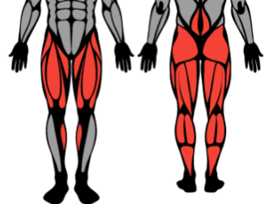

Lower Body Split
Quads · Hamstrings · Glutes · Calves — 2 days per week

The Lower Body Split is the companion to upper body training in a 4-day Upper/Lower programme. Dedicating full sessions to the lower half ensures the legs, glutes, and posterior chain receive the volume and intensity they need to develop — muscles that are often undertrained when crammed into a full-body session. This split alternates between strength-focused and hypertrophy-focused lower days for well-rounded development.
Lower A — Squat Dominant (Strength)
| Exercise | Sets | Reps | Rest | Notes |
|---|---|---|---|---|
| Barbell Back Squat | 4 | 4–6 | 3 min | Primary strength movement |
| Romanian Deadlift | 3 | 8–10 | 2 min | Hip hinge, hamstring stretch |
| Leg Press | 3 | 10–12 | 2 min | High or low foot placement |
| Lying Leg Curl | 3 | 10–12 | 90 sec | Full range of motion |
| Standing Calf Raise | 4 | 12–15 | 60 sec | Pause at stretch |
Lower B — Hip Dominant (Hypertrophy)
| Exercise | Sets | Reps | Rest | Notes |
|---|---|---|---|---|
| Hip Thrust (Barbell) | 4 | 10–12 | 2 min | Full glute squeeze at top |
| Bulgarian Split Squat | 3 | 10–12 each | 2 min | Addresses imbalances |
| Sumo or Conventional Deadlift | 3 | 6–8 | 3 min | Hip dominant pattern |
| Leg Extension | 3 | 15–20 | 60 sec | VMO isolation |
| Seated Leg Curl | 3 | 12–15 | 90 sec | Different angle vs lying |
| Seated Calf Raise | 4 | 15–20 | 60 sec | Soleus focus |
Programming Tips
- Pair Lower A with Upper A on the same training block for balanced weekly volume.
- Keep at least 48 hours between lower sessions — leg training is very demanding systemically.
- Prioritise hip thrusts on Day B if glute development is a primary goal.
- Single-leg work (Bulgarian split squat) should come before isolation machines, not after.